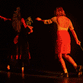

Información: (+57) 350 215 11 00 (WhatsApp)
Marzo
Viernes
27
de marzo
8:00 p.m.

Matacandelas presenta:
Incertidumbre
De la mano de Bertolt Brecht, Boris Vian y Tristan Tzara
Temporada de estreno
Valor: Precios a partir de $11.900 COP para afiliados Comfama | General $40.000 - 50% para estudiantes, tercera edad y personas con discapacidad.
Espacio: Sala Matacandelas.
Compra tu Ticket | Hora: 8:00 p.m.
Viernes
27
De marzo
10:00 p.m.
Velandia y GäTomoto
Edson Velandia y Henry Rincón
Lugar: Cabaret El Cantadero Matacandelas.
Valor: $60.000
Asociados y ahorradores CONFIAR: $30.000
Compra tu Ticket
Sábado
28
de marzo
8:00 p.m.
Matacandelas presenta:
Incertidumbre
De la mano de Bertolt Brecht, Boris Vian y Tristan Tzara
Temporada de estreno
Valor: Precios a partir de $11.900 COP para afiliados Comfama | General $40.000 - 50% para estudiantes, tercera edad y personas con discapacidad.
Espacio: Sala Matacandelas.
Compra tu Ticket | Hora: 8:00 p.m.
Abril
Viernes
10
de abril
8:00 p.m.
A 100 años de Álvaro Cepeda Samudio
La casa grande
(Aquellas aguas trajeron estos lodos)
De: Álvaro Cepeda Samudio
Valor: $40.000 - 50% para estudiantes, tercera edad y personas con discapacidad.
Espacio: Sala Matacandelas.
Compra tu Ticket | Hora: 8:00 p.m.
Sábado
11
de abril
8:00 p.m.
A 100 años de Álvaro Cepeda Samudio
La casa grande
(Aquellas aguas trajeron estos lodos)
De: Álvaro Cepeda Samudio
Valor: $40.000 - 50% para estudiantes, tercera edad y personas con discapacidad.
Espacio: Sala Matacandelas.
Compra tu Ticket | Hora: 8:00 p.m.
Sábado
11
De abril
10:00 p.m.
Nova presenta:
El Robo
Artistas: Nova (Colombia) y Reyner (Colombia)
Lugar: Cabaret El Cantadero Matacandelas.
Valor: Preventa $30.000 | En puerta $40.000
Más Información
Domingo
12
de abril
11:30 a.m.
Matacandelas presenta:
Pinocho
Títeres - Teatro - Música
Valor: $40.000 - 50% para niños, tercera edad y personas con discapacidad.
Espacio: Sala Matacandelas.
Compra tu Ticket | Hora: 11:30 a.m.
Viernes
17
de abril
8:00 p.m.
A 100 años de Álvaro Cepeda Samudio
La casa grande
(Aquellas aguas trajeron estos lodos)
De: Álvaro Cepeda Samudio
Valor: $40.000 - 50% para estudiantes, tercera edad y personas con discapacidad.
Espacio: Sala Matacandelas.
Compra tu Ticket | Hora: 8:00 p.m.
Sábado
18
de abril
8:00 p.m.
A 100 años de Álvaro Cepeda Samudio
La casa grande
(Aquellas aguas trajeron estos lodos)
De: Álvaro Cepeda Samudio
Valor: $40.000 - 50% para estudiantes, tercera edad y personas con discapacidad.
Espacio: Sala Matacandelas.
Compra tu Ticket | Hora: 8:00 p.m.
Domingo
19
de abril
11:30 a.m.
Matacandelas presenta:
Hechizerías
Títeres - Teatro - Música
Valor: $40.000 - 50% para niños, tercera edad y personas con discapacidad.
Espacio: Sala Matacandelas.
Compra tu Ticket | Hora: 4:30 p.m.
Sábado
25
de abril
8:00 p.m.
A 100 años de Álvaro Cepeda Samudio
La casa grande
(Aquellas aguas trajeron estos lodos)
De: Álvaro Cepeda Samudio
Valor: $40.000 - 50% para estudiantes, tercera edad y personas con discapacidad.
Espacio: Sala Matacandelas.
Compra tu Ticket | Hora: 8:00 p.m.
Domingo
26
de abril
11:30 a.m.
Matacandelas presenta:
Fiesta
¡Títeres, qué alegría!
Valor: $40.000 - 50% para niños, tercera edad y personas con discapacidad.
Espacio: Sala Matacandelas.
Compra tu Ticket | Hora: 11:30 a.m.
Mayo
Viernes
29
De mayo
10:00 p.m.
Rock Symphony Productions presenta:
Fabio Lione Rhapsody Times
"Dawn of the Enchanted Tales"
Artistas: Fabio Lione (Italia) + Royal Project
Lugar: Cabaret El Cantadero Matacandelas.
Valor:
Etapa 1: $100.000 | Etapa 2: $130.000 | Etapa 3: $150.000
*Edad mínima 15 años (menores acompañados de adulto responsable)
Compra tu Ticket
Descuentos*
- 50% para estudiantes, tercera edad y personas con discapacidad.
Si llegas en bicicleta $15.000

Asociados a CONFIAR pagan sólo $15.000 Presentando la tarjeta débito o crédito.
Guarda tu boleta y obtén un descuento en las salas de Medellín en Escena
*Válido para funciones de Matacandelas en su sede
Nuevos artículos
- Promesa y belleza Por Diana Acosta Rippe
- Libro Colectivo Teatral Matacandelas / 36 años | Colección Grandes Creadores del Teatro Colombiano
- Italianos, españoles, franceses y marxistas deambulando por los escenarios de La Villa - Por: Cristóbal Peláez González
- El Primer amor de Matacandelas: lúcido y transgresor - Por Claudio Rivera
- Incertidumbre y muerte Por Analucía Isaza Molina
- Entrevista a Eduardo Cárdenas Por Cristóbal Peláez González
- Dos siglos de teatro en Medellín Por Cristóbal Peláez González
- Teatralidad y heteronimia en Fernando Pessoa y Alberto Caeiro - Diana Acosta Rippe
- El Ceremonial de la Quietud - David Barbosa Carvajal
- Conversando con Juan Álvaro Romero - Por Cristóbal Peláez González
- Antínoo o la sugestión poética - Por Andrés Álvarez Arboleda
- La entrevista perdida de Cristóbal Peláez - Por Canek Denis
- Diego Sánchez: Un luto al ritmo de una caída - Por Manuela Saldarriaga
- Este país está todavía en obra negra - Por Santiago Orozco U
- La capital es Medellín - Por Maria Mercedes Carranza
- El parque Lleras y Sylvia Plath - Por Sandro Romero Rey
- Indígenas, cineastas y guerreros en la obra Bio de Miguel Ángel Rojas - Por Cristóbal Peláez Gonzalez
- Nadie deliberadamente monta mal teatro - Por Cristóbal Peláez González
- El arte no es una suma de adiciones, sino, por el contrario, de destrucciones - Por Cristóbal Peláez González
- Matacandelas: pandilla alegre de creadores - Por: Marina Lamus Obregón
- La casa en el aire y Matacandelas - Por Cristóbal Peláez González
- El legado de Andrés Caicedo. La contracultura de una generación que ha hecho eco Por: Lina Isabel Castaño
- Primer amor este finde en Casa de Teatro - Por Freddy Ginebra
- Domingo 27 de marzo de 2022, Día Internacional del Teatro - Un manifiesto - Por Cristóbal Peláez González
- Esteban Gira - El intérprete invisible
- Aproximaciones a lo sonoro y a lo musical en el Teatro Matacandelas - Por: Cristóbal Peláez González
- Jorge Alí Triana - La dramaturgia siempre llega de última a las culturas porque es muy compleja - Por: Cristóbal Peláez González
- Una casa en silencio - por Adriana García Arriola
- Juegos Nocturnos 2: Sobre la ¿utilidad? de la ´Patafísica por Adriana García Arriola
- Óscar Campo: "Yo soy un collage andante" Por Cristóbal Peláez González
- Entrevistando a Javier Gómez Henao - Cristóbal Peláez González
Distinto
de Juan Ramón Jiménez
Lo querían matar
los iguales
porque era distinto.
Si veis un pájaro distinto,
tiradlo;
si veis un monte distinto,
caedlo;
si veis un camino distinto,
cortadlo;
si veis una rosa distinta,
deshojadla;
si veis un río distinto,
cegadlo…;
si veis un hombre distinto,
matadlo.
¿Y el sol y la luna
dando en lo distinto?,
altura, olor, largor, frescura, cantar, vivir
distinto
de lo distinto;
lo que seas, que eres
distinto
(monte, camino, rosa, río, pájaro, hombre…):
si te descubren los iguales
huye a mí,
ven a mi ser, mi frente, mi corazón distinto.